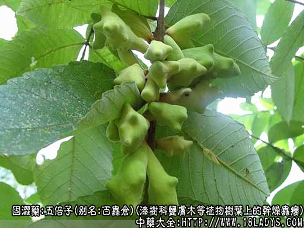
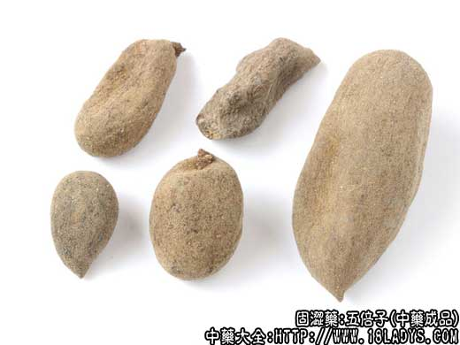
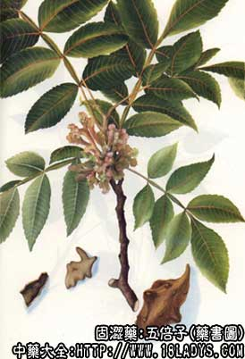

五倍子为少常用中药。始载《开宝本草》。商品分肚倍与角倍两种。
别名：文蛤、百虫仓。
来源：为漆树科植物盐肤木或青杨等植物树叶上的干燥虫瘿。前者所生称“角倍”后者所生称“肚倍”。均由五倍子蚜虫寄生而形成。均为野生。
采集加工：肚倍5～6月采集，角倍8～9月采集。自树上摘下后，用沸水煮，随时搅拌，使其由黄褐色转变成灰色（约3～5分钟），以杀死内部的虫为度，取出，晒干或阴干即得。
产地：生产于西南、中南地区。此外浙江、江西、安徽、福建、山西、陕西等省均有生产。
形状鉴别：
（1）肚倍。呈长圆形或纺锤形，囊包状，长3～6厘米，直径2～5厘米，壁厚约3毫米。表面灰色或淡棕色。质硬而脆，易破碎。断面角质样，有光泽。内壁平滑，内有黑褐色死蚜虫及灰色粉状的排泄物。气特异。味涩。
（2）角倍。呈棱角形，具数个不规则的角状突起，表面的灰白色滑软的绒毛。壁较薄。其它与肚倍同。
两种五倍子，均以个大、皮厚、质坚、完整不碎者为佳。习惯认为肚倍优于角倍。
主要成分：含鞣质50%～80%，陈五倍子鞣酸，其中主要为五-间双没食子酰葡萄糖，另含少量没食子酸、脂肪、树脂。
药理作用：前人已认识到本品有止血、止汗作用，现代证实其原理为：
（1）收敛。有效成分为鞣酸，能使皮肤、粘膜和溃疡的组织蛋白凝固。
（2）止血。促进血液凝固。
（3）抗菌。对金黄色葡萄球菌、痢疾杆菌、伤寒杆菌、炭疽杆菌、绿浓杆菌有显著抗菌作用，其原理为所含鞣质能凝固蛋白，影响细菌的营养和代谢。
（4）抗病菌。对甲型和亚洲甲型流感病毒有抑制作用，有效成分可能为鞣酸。
（5）抗真菌。对羊毛样小孢子菌等有较强的抑制作用。
炮制：敲开，去净杂质。
性味：酸、平。
功能：敛肺、止血、敛汗、涩肠，解毒。
主治：肺虚咳嗽，久泻脱肛、自汗、盗汗、吐衄崩漏；外敷金疮出血，痈疽疮毒，香油调敷治烫伤。
临床应用：
（1）用于保护胃肠粘膜，内服治胃和十二指肠溃疡病，有收敛和镇痛作用，常配煅瓦楞子，白芨、煨诃子、鸡骨香、两面针等，方如五倍子汤，效果较好，有止痛、制酸、收敛等作用。
（2）用于止血，尤多用于妇科子宫功能性出血或月经过多，来势急猛者。在治疗方剂内加入五倍子，能加强止血作用。血崩后虚脱而汗出不止者，用五倍子既能止血，又能敛汗，常配龙骨、牡蛎等。临床经验表明，对崩漏的治疗，五倍子的止血作用比血余炭好。
（3）用于治疗脱肛，取其有收敛作用。常用五倍子9g，配黄芪15g，升麻6g，水煎服，配合外用熏洗（五倍子、明矾石各15g，水煎、乘热熏洗20分钟左右）。
治久痢便血，可配诃子、五倍子、地榆。
（4）外用方面如治瘢痕疙瘩，可配黑醋、蜈蚣、蜂蜜等制成软膏敷，有一定效果五倍子煎汤外用局部熏洗，对皮炎、疮癣等有一定疗效。
又用于治疗痈疮，取其有抗菌消炎作用。动物试验证实，五倍子煎液对金黄色葡萄球菌引起的局部脓疮有疗效。临床报道用五倍子散外敷治“搭背”“背痈”，疗效较好。
用量：内服1.5～9g，入丸散剂；或单味研细末，用其他汤药冲服，每次3g。亦可入煎剂。外用适量。
处方举例：
1、如五倍子汤：五倍子4.5g，煅瓦楞子12g，白芨6g，煨诃子6g，鸡骨香12g，鸡内金15g，两面针9g，水煎服。
2、五倍子散：用五倍子以蜂蜜炙至深黄，研成细粉，取适量用米醋调成软膏敷患处，每日换药一次，至脓净时为止。
注：成分：主要含鞣质70%～80%。五倍子粉末，加三氯化铁溶液则显蓝黑色（鞣质反应）。